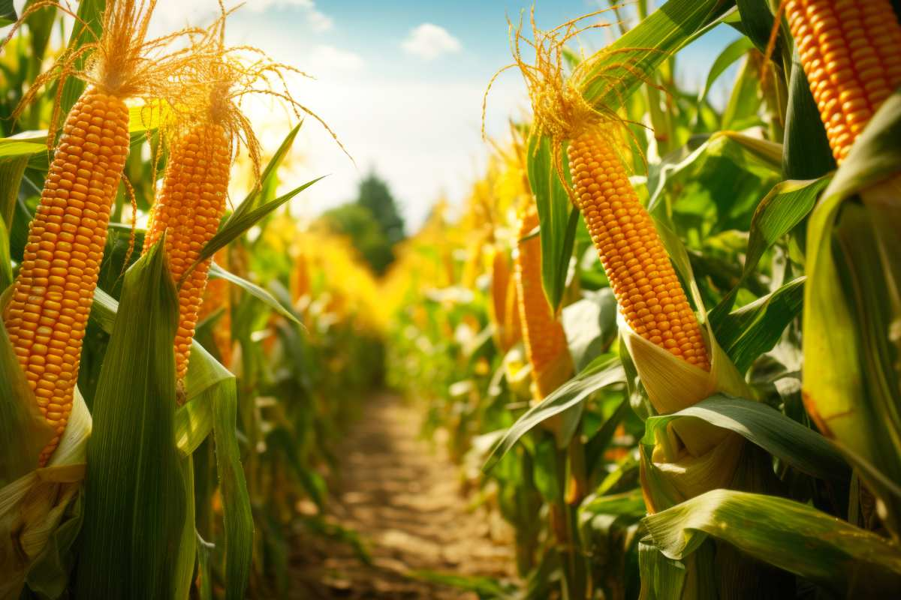
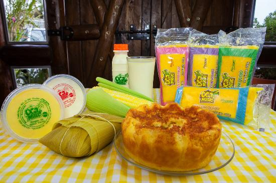
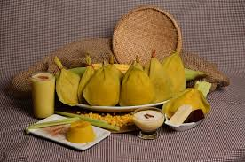

O ciclo do milho verde começa nos campos, onde agricultores semeiam sementes que crescem sob o sol do verão, resultando em espigas verdes. Após a colheita manual, essas espigas chegam aos mercados, prontas para serem apreciadas pelos consumidores. Assim, o ciclo se completa, proporcionando satisfação aos estômagos e paladares, em uma celebração da generosidade da natureza.
Formas de preparo do milho.
  